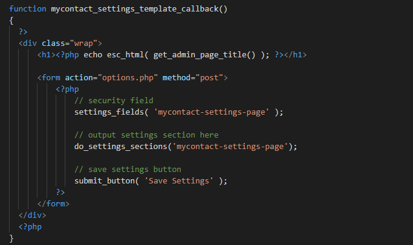
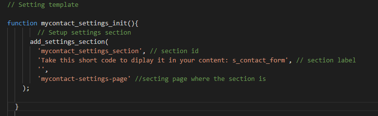
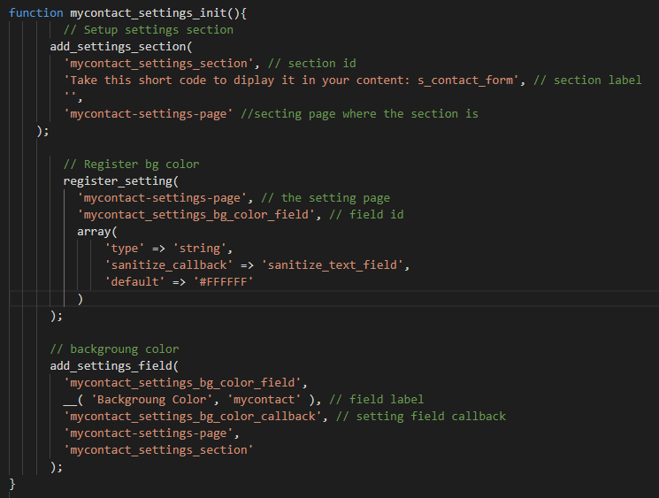
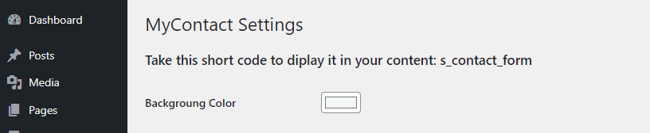
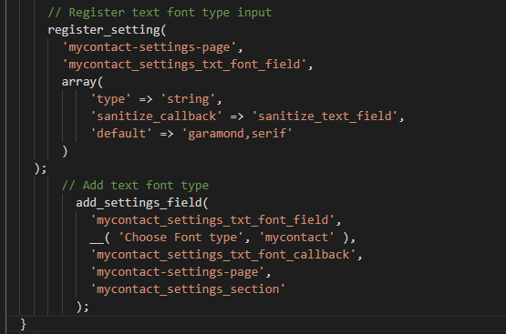
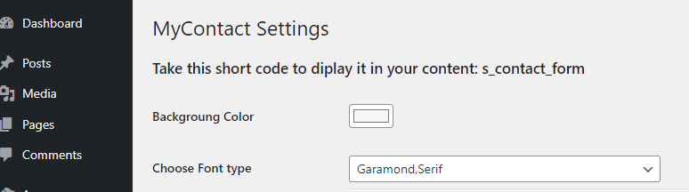

Plugin Development Step By Step (Version II)
Step #1: Making Customization settings form
In order to customize our contact form we need to add some new function in our main php file.
This call back function contain the Customized form and later we will add fields to it. The option.php will take the form value and save them in database.
Step #2: Adding section to the setting page
This function will add section to the setting page. And there might be other setting pages so to differ it from other settings we add "mycontact-settings-page".
Step #3: Adding Fields to the section
So, we will see two example of how to add field to the section we created:
Example 1.Background color
The first function is used to register the field and the second function is used to add it to the section. As you can see a default value has been given to it which is white.And 'sanitize_text_field' means to only use a text_field and not other type of inputs.
After we save this we should go back and check our wordpress.
Example 2.Font Type
Just like background color this field will also have the same 2 functions. The default value will be 'garamond,serif'.
After we save this we should go back and check our wordpress.
Step #4: Create callback function
The following callback function is for the background color and font type. The php code "echo isset($mycontact_btn_color) ? esc_attr( $mycontact_btn_color ) : ''; " is used to check if there is a value stored in database and if there is not to leave it empty. But since we already gave it a default value even if there is no value in database we will see the default value.

Step #5: Displaying the Customized Contact Form
The get_option() is used to get value from the option.php which is from our database.

After changing the background color, font type, Button color, Button text color,our contact form will look like:
The menu setting

The Customized Contact form

The Full Source Code(Check Version II ) : Custom WordPress Plugin